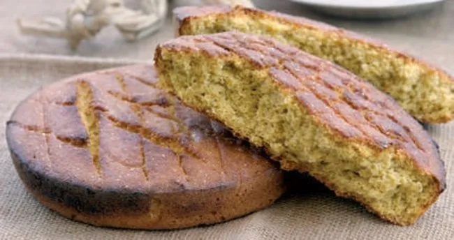

Mısır Ekmeği
Karadeniz mutfağının geleneksel bir ürünü olan mısır ekmeği genellikle; çorba, balık, salata veya yoğurt ile birlikte tüketilir.

Tarif
Malzemeler
- 10 su bardağı mısır unu
- Yarım su bardağı un
- 1 tatlı kaşığı tuz
- 2 tatlı kaşığı şeker
- 1 paket kabartma tozu (elenmiş)
- Yarım su bardağı sıvı yağ
- 5 su bardağı sıcak su
Yapılışı
- Sıvı yağ ve su hariç tüm malzemeler yoğurma kabına alınır, tahta kaşık yardımı ile güzelce karıştırılır.
- Unun ortası havuz şeklinde açılır, boşluğa sıvı yağın tamamı ve sıcak sudan 1 su bardağı kadar dökülerek kenarlardaki mısır unundan alınarak kaşıkla karıştırılır. Burada suyun el yakmayacak kadar sıcak olması gerektiğini belirtmek istiyorum.
- Yavaş yavaş az miktarda sıcak sudan ilave edilip hamur kıvam alıncaya kadar karıştırılır. Hamurun kurabiye hamurundan daha cıvık bir kıvamda olması gerekmektedir.
- Hamurumuz kıvam almaya başlayınca biraz daha su ilave edilir ve el ile yoğurmaya başlanır. Yaklaşık 4-5 dakika kadar el ile yoğrulur.
- Hamur istenilen kıvama gelince 30 cm çapındaki tepsiye pişirme kağıdı serilir, kenar kısımları dışa doğru katlanarak sıkılaştırılır. Eğer pişirme kağıdınız yoksa fırın tepsinizi güzelce yağlayabilirsiniz.
- Hamur tepsiye boşaltılır ve el ile bastırılarak yayılır. Ardından bıçak ile istenilen boyutta kesilir. Daha belirgin olması için tahta kaşığın sap kısmı ile kesilen yerler şekillendirilir.
- Üzerine hafif un serpilerek önceden ısıtılmış 190 derece fırında altı üstü kızarıncaya kadar yaklaşık 1 saat 15 dakika pişirilir.
- Güzelce kızaran ve ilk sıcaklığı çıkan mısır ekmeğimizi uygun bir servis tabağına ters çevirerek üzerindeki pişirme kağıdını alalım. Tekrar keserek servise hazır.
.png)